Hiezu, Tottori: things to do, food and stays
Hiezu · Tottori
Hiezu
Highlighted on the Tottori map.
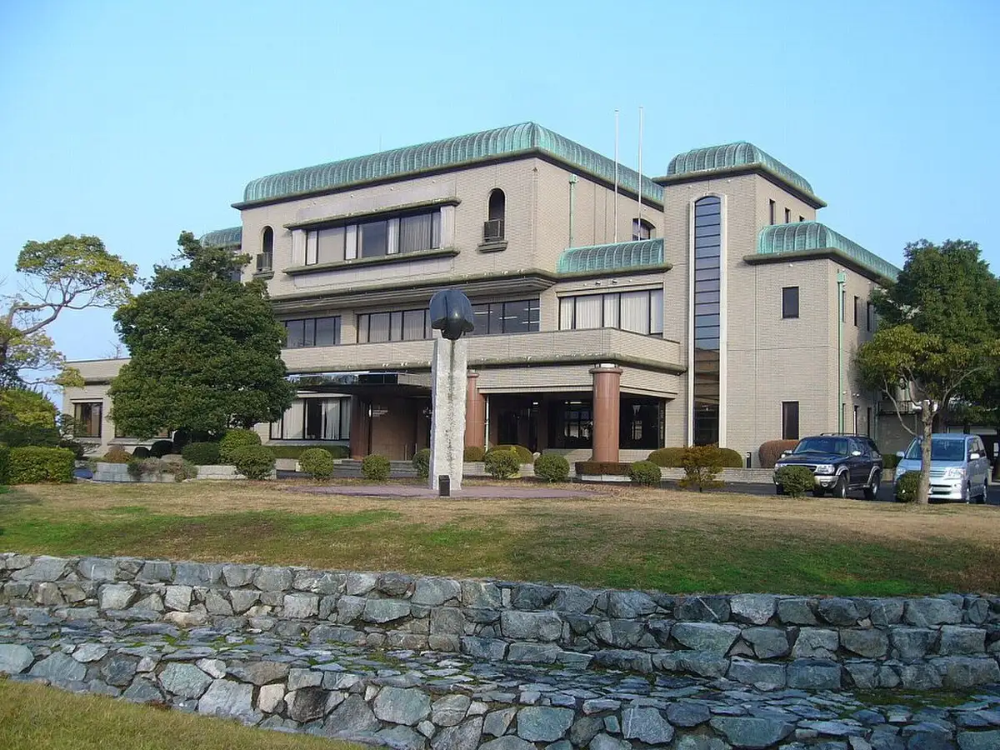
Stay
No bookable places to stay found in Hiezu — nearest options in Yonago.
Dining
山芳亭
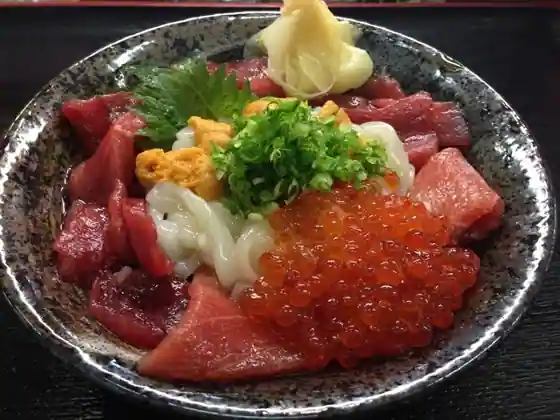
Yama Ho Tei
天ぷら まさお
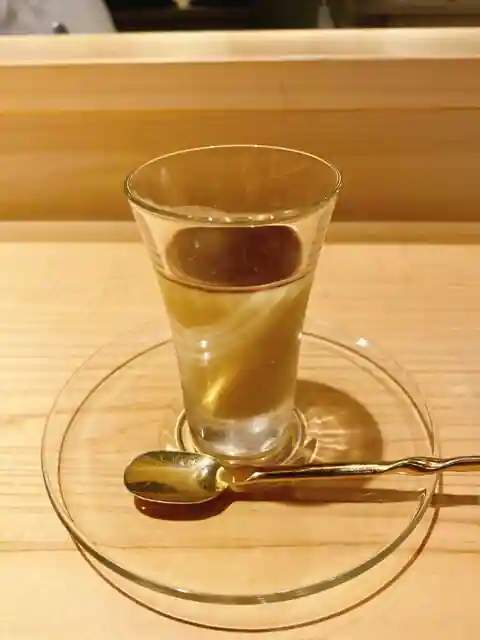
Tenpura Masao
ラーメン鈴蘭
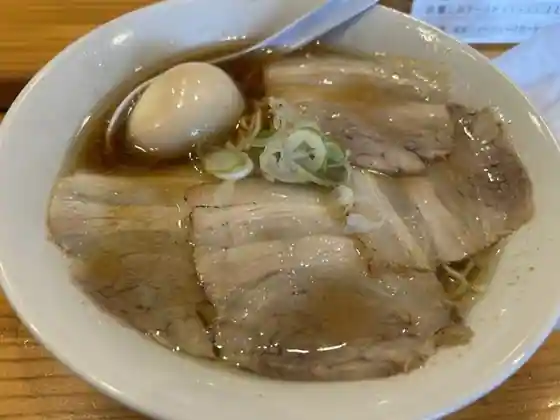
Ramen Suzuran
白バラみるくショップ アスパル店
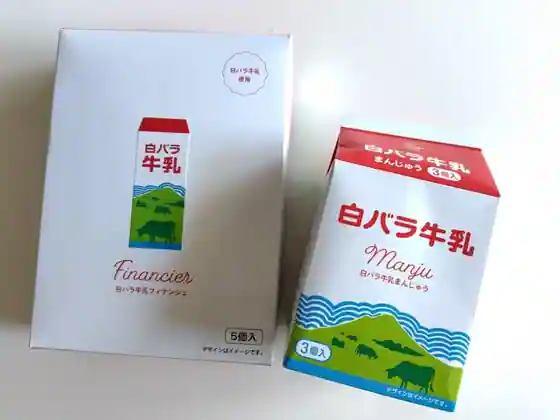
Shiro Bara Miruku Shoppu Asuparu
Italian Kitchen VANSAN 日吉津店
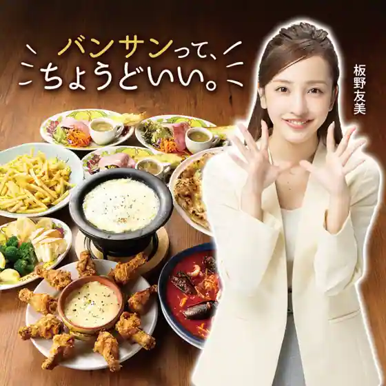
Italian Kitchen VANSAN Hiezu
ミスター・バーク 日吉津店
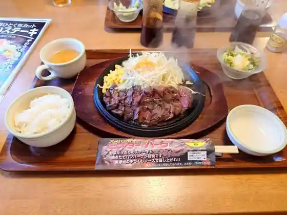
Misuta Baku Hiezu
スパイスキングダム イオンモール日吉津店
Supaisukingudamu Ionmoru Hiezu
牛骨ラーメン だいざん
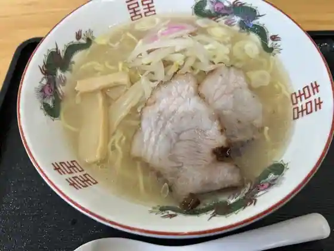
Ushibone Ramen Daizan
フォー専門店 あび
Fo Senmon Abi
Sweets Garden Laboratory SHIOTA
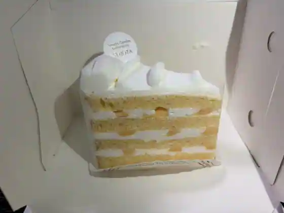
Sweets Garden Laboratory SHIOTA
CAFE BRICCO 日吉津店
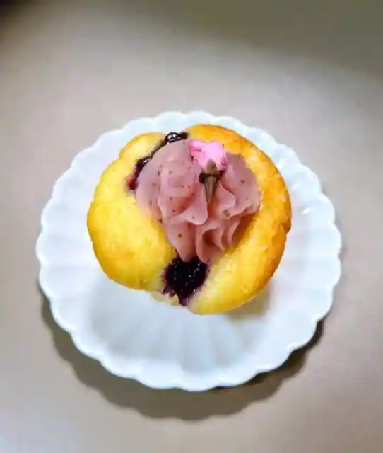
CAFE BRICCO Hiezu
ひえづマルシェ tulipana
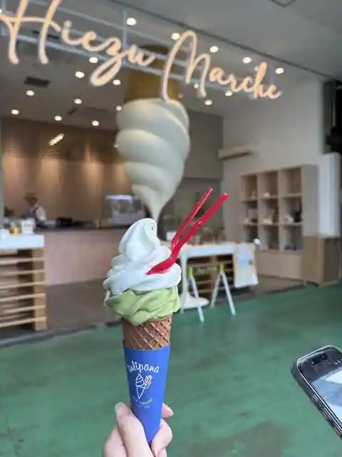
Hiezu Marushie tulipana
TRUFFLE DONUT 日吉津店
TRUFFLE DONUT Hiezu
らーめん専門店ゆめや イオンモール日吉津店
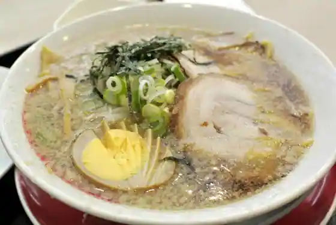
Ramen Senmonten Yumeya Ionmoru Hiezu
お菓子屋 respirer
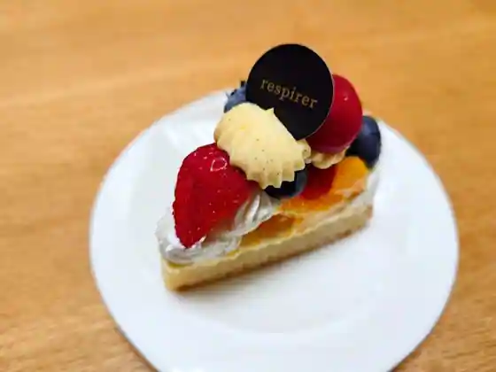
O Kashiya respirer
めん宝 日吉津
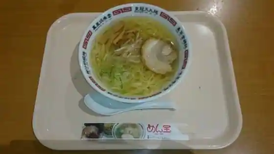
Men Takara Hiezu
焼肉飯店ふるさと
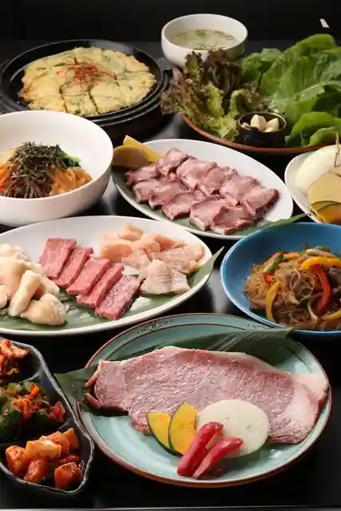
Yakiniku Hanten Furusato
あん庵
An Iori
丸平珈琲
Maru Taira Coffee
食堂しんさん
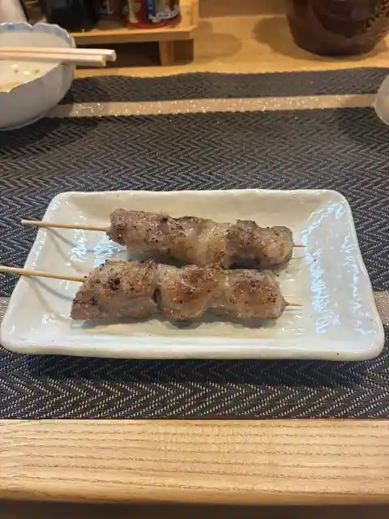
Shokudo Shinsan
SAHANJI イオンモール日吉津店
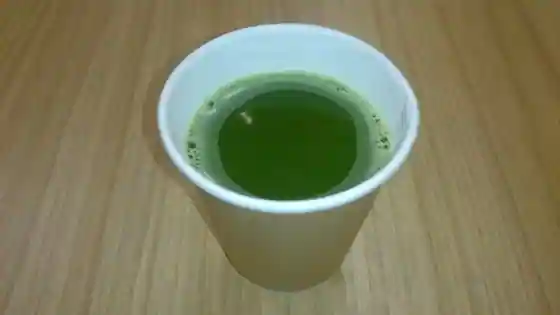
SAHANJI Ionmoru Hiezu
無垢な珈琲
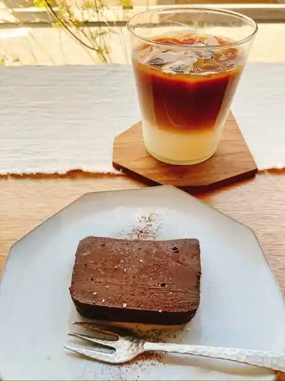
Muku Na Coffee
はなまるうどん イオンモール日吉津店
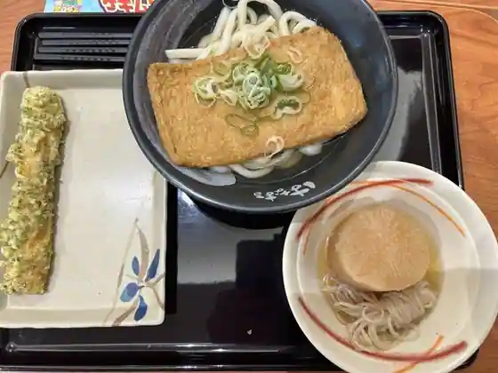
Hanamarudon Ionmoru Hiezu
Sights
Hiezu Town Hall